Passo a Passo
Introdução
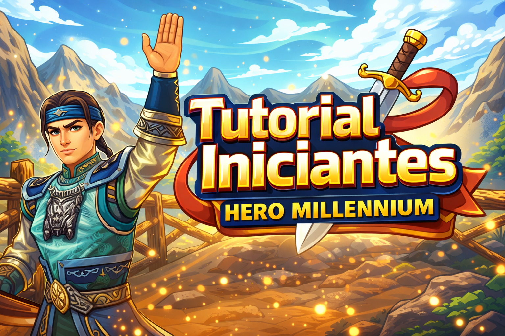
Seja bem-vindo ao nosso tutorial Herói.
Passo 1 — Criando Personagem
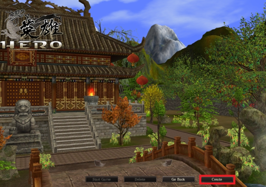
Como não há nenhum personagem existente, clique para criar um personagem. Você pode criar 6 personagens por conta!
Passo 2 — Personalizando Personagem
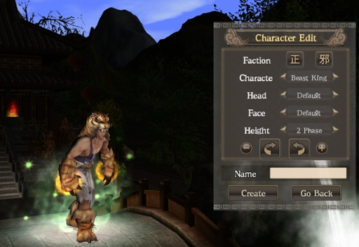
Se você clicou em 'Criar', é hora de personalizar seu personagem! Existem 3 conceitos principais que você pode escolher: Facção / Personagem / Altura.
Passo 3 — Facção
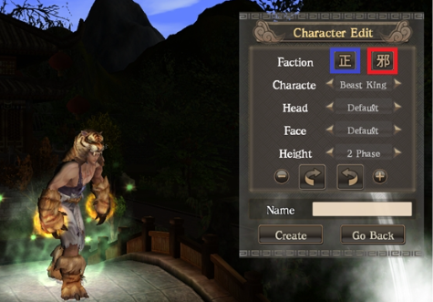
Justiça (Zhuang) ou Caos (Shao). Depois de criar um personagem como Justiça (Zhuang), você não poderá transferir/criar um personagem Caos (Shao) e vice-versa.
Passo 4 — Personagem
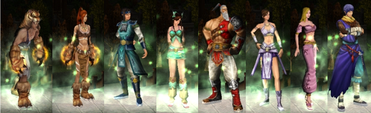
Existem 8 personagens diferentes que você pode criar: Rei Besta / Imperatriz / Baej-Moo-Ju / Dae-So-Ryu / Gwak-Chun / Lim-Ah-Ryu / Ho-wal-you / Hyun-Jang (Esquerda → Direita)
Passo 5 — Altura
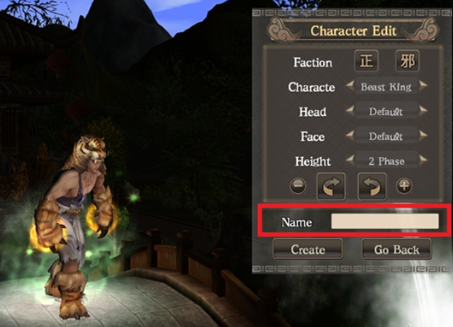
Há 0 Fase ~ 4 Fases. A fase 0 é a menor e a fase 4 é a maior. Escolha com cuidado — você não poderá alterar a altura no jogo! Após terminar de personalizar, insira o nome do personagem. Se quiser mudar o nome no futuro, use o item 'Charm of Identity' dentro do jogo.
Passo 6 — Iniciar Jogo
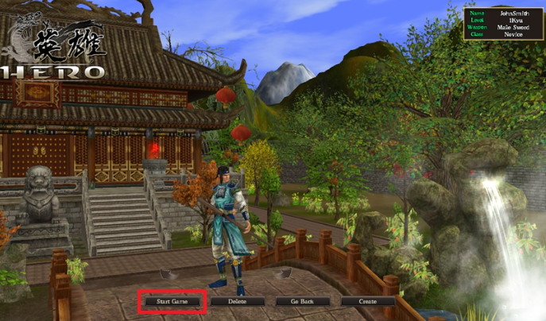
Abra o baú iniciante que receberá em seu inventário, recebendo itens que te auxiliam no crescimento e evolução do personagem.
Passo 7 — Atalhos
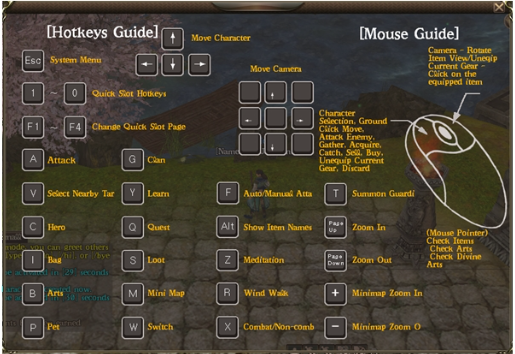
Apertando a tecla "H" você consegue visualizar um campo com atalhos.
Passo 8 — Comece sua Jornada
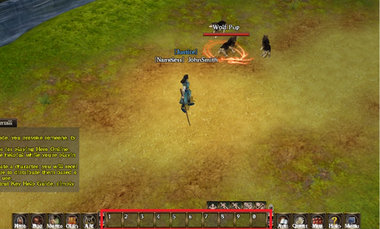
Você pode escolher um monstro com um clique esquerdo. Se você clicar com o botão esquerdo mais uma vez ou pressionar 'A', seu personagem causará dano com ataque normal. Se seu personagem aprender habilidades, coloque-as nas barras de atalho e pressione #1~9 para causar dano com ataque de habilidade.
Passo 9 — Coletando Itens
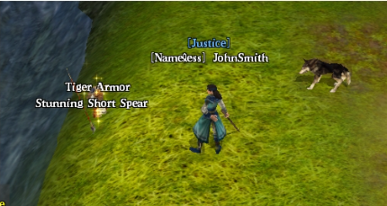
Quando você mata um monstro, às vezes um item brilhante cai. Você pode verificar o nome deste item pressionando 'Alt'. Você também pode obter este item clicando com o botão esquerdo ou pressionando 'S'.
Passo 10 — Avançado
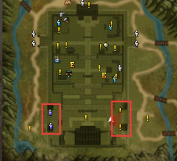
Se um personagem alcançar 1 Dan 0Kyu (Nv. 10), você pode visitar o Treinador Médico Bong, o Treinador Guerreiro General Hwang, o Treinador Caçador Han ou o Treinador Assassino Bing para escolher uma profissão: Curandeiro, Guerreiro, Caçador ou Mercenário. Após escolher, você receberá um livro de habilidades. Se atingir 5 Dan 0Kyu (Nv. 50), poderá evoluir para uma segunda classe com diferentes conjuntos de habilidades.
Passo 11 — Livro de Habilidades Adicionais
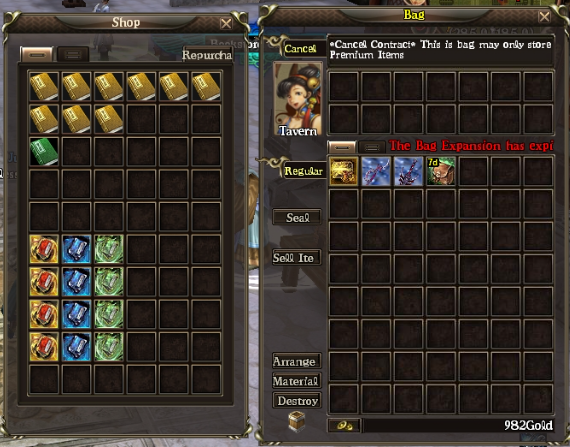
Vá até o Bookstore Clerk Seo para comprar livros de habilidades básicas. Você pode derrotar monstros facilmente com um livro de habilidades!